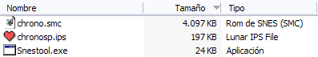
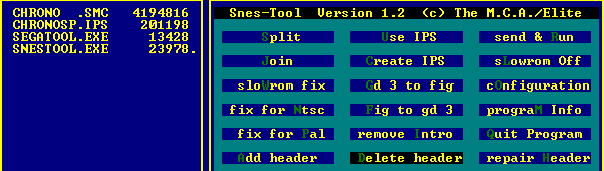
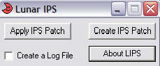

(No te asustes, es fácil realmente xDDD)
¡Hoooooolaaa pequeño videojugador! :D xDDD
En este simple tutorial explicaré cómo aplicar un parche IPS para insertar un hack o una traducción a ese juego que tanto intentaste jugar en inglés (o japonés, o quién sabe xD), por supuesto que para lograr esto el parche debe estar hecho para ESE juego, es decir, si tienes un parche que traduce al español el "Final Fantasy IV" de SNES, no podrás usarlo para traducir al español el "Chrono Trigger" de SNES. Actualmente puedes encontrar una lista (con enlaces y tó :D) a la mayoría de traducciones hechas por los grupos de traducción hispanos en RomhackHispano.org ;D
Aprenderemos cómo aplicar parches de dos maneras: con SnesTool/SegaTool (da lo mismo cuál uses, los dos aplican los parches de igual manera para cualquier tipo de ROM) y Lunar IPS. SnesTool y SegaTool corren sobre D.O.S, mientras que Lunar IPS sobre Windows. Si necesitas algún parcheador para otra plataforma (Linux, Mac, etc.) te recomiendo buscar en RHDN. También puedes descargar ambos programas en mi web.
(Importante: El siguiente anexo sólo es válido para ROMs de SNES, si el parche que quieres aplicar es de otra plataforma puedes salteártelo)
Antes de aplicar un parche para un juego de SNES hay un pequeño detalle que tienes que tener en cuenta, algunos dumps (copias) de la ROM poseen una cabecera de 512 bytes, y si se da la casualidad de que el parche fue hecho sobre una ROM sin cabecera y lo aplicas sobre una ROM con cabecera no funcionará como debe, así que antes de aplicar el parche lee el archivo "léeme" adjunto (ya prácticamente todos los traductores los incluyen), que debería informar si el parche debe aplicarse a la ROM con o sin cabecera. Una vez que sepas esto debes saber si tu ROM tiene cabecera, puedes darte cuenta a simple vista si el tamaño (en KB) como te lo muestra Windows es impar.
Los tamaños más comunes en ROMs de SNES (en KB) son:
(Hay algunas ROMs más grandes, pero estas son las más comunes).
Si tu ROM es, por ejemplo, de 513 KB, entonces es una ROM con cabecera, deberás eliminar la cabecera manualmente (borrando los primeros 512 bytes con un editor hexadecimal) o, la forma más fácil, usando un programa para ello (como SnesTool).

Como puedes ver en la imagen la ROM (de nombre chrono.smc) es de 4097 KB, uno más que 4096, por lo que es una ROM con cabecera, vamos a abrir el SnesTool para quitarla, eligiendo la opción "Delete Header".

(por si no la ves es la última de la columna central :P)
Una vez hecho esto, elegimos nuestra ROM en el menú de la izquierda y le quitará el cabezal automáticamente, no te preocupes si te confundes de ROM, ya que si ésta no tiene cabezal el programa no hará nada.
Para aplicar un parche con este programa debes reunir en una misma carpeta:
el programa (Snestool.exe o Segatool.exe), el parche (nombredelparche.ips) y la
ROM (nombrederom.extension), la extensión de la ROM varía según la consola a la
que pertenezca (Gameboy, Sega, Super nintendo, etc.). Una vez que tengas todo
junto ejecuta el programa, una vez abierto selecciona la opción "Use IPS" (como
puedes ver en la imagen que usé en el anexo anterior, es la primera opción de la
columna central), a continuación elige el parche que quieres aplicar del menú a
la izquierda, y luego de eso la ROM a la cual aplicar el parche.
En la barra inferior te aparecerá "IPS patched ok.", lo que significa que ya se
aplicó el parche con éxito y puedes probar tu juego.
Con Lunar IPS es bastante más fácil, tan solo ejecuta el programa, y selecciona la opción "Apply IPS Patch":

(No hace falta que remarque que es el primer botón, ¿verdad? :P)
Una vez que lo pulses deberás buscar el parche .ips y luego la ROM.
Tardará muy poco, y aparecerá un mensaje diciendo "The file was successfully patched!", lo que indica que ya puedes jugar con tu ROM parcheada :D
Sí, era fácil, ¿verdad? ahora puedes disfrutar de las geniales traducciones de la CHR (Comunidad de Romhackers Hispanos) ;D
¡Saludos!
-DaRKWiZaRDX